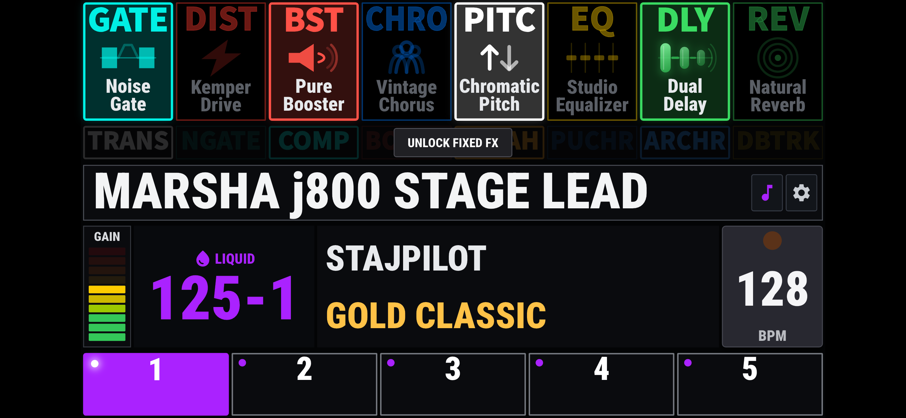
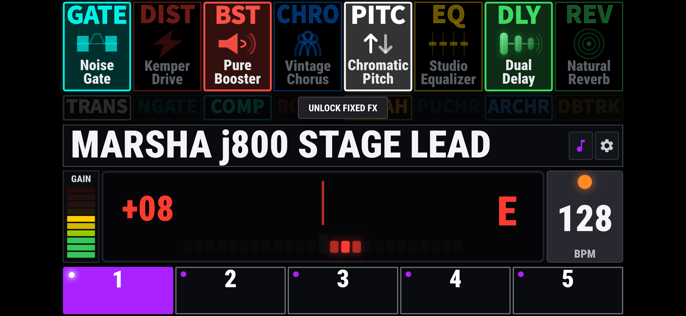
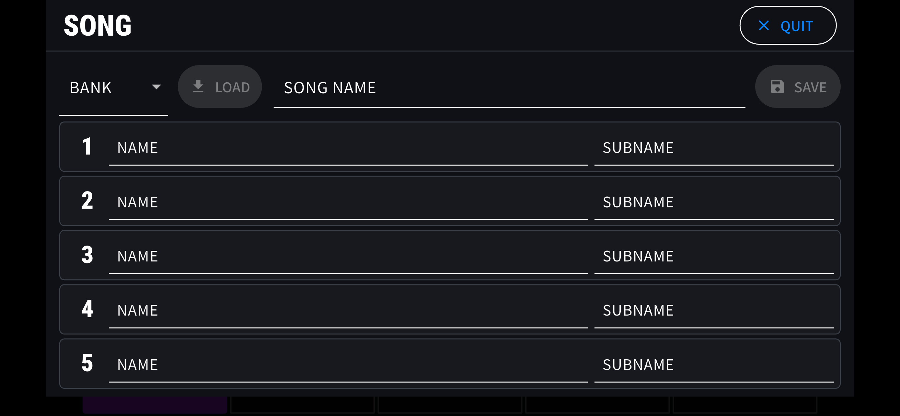
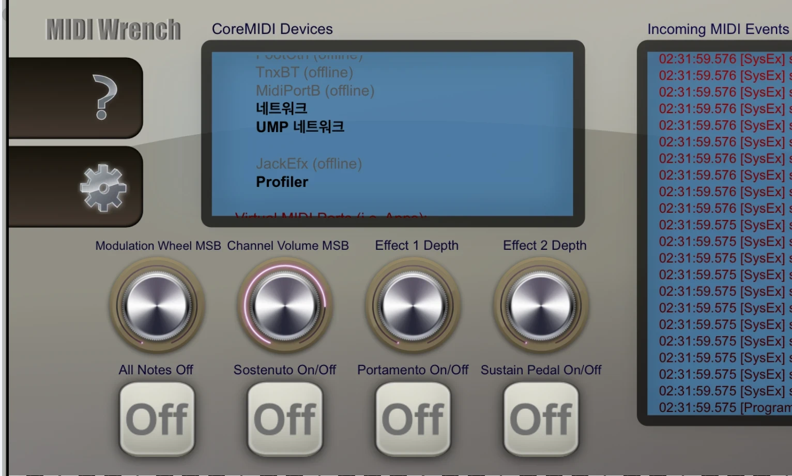
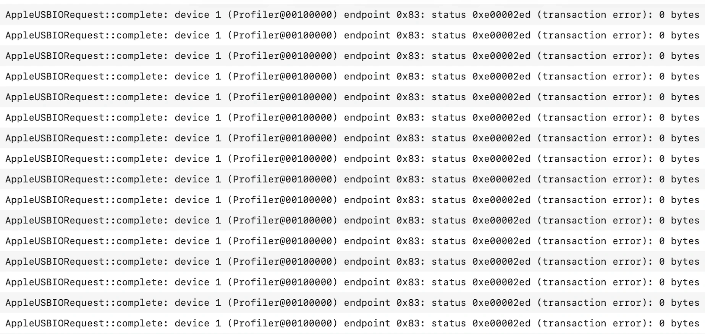

iPhone & iPad / USB MIDI
StajPilot for iPhone & iPad
A stage-ready MIDI controller and performance display for the KEMPER PROFILER Player.
Available at an introductory launch price. Check the App Store for your local price.

- Wired USB MIDI
- No account
- No subscription
- No internet needed to use the app
On stage
See your rig. Stay in control.
Effects, with their actual names
See detailed effect names and the live on/off status of eight rig FX blocks. Touch a block to control it. Fixed FX have their own controls, with state updates when switching rigs rather than continuous real-time state synchronization. Touch and Always modes are available.
Rigs and performance controls
Five slot controls, bank navigation, rig names, author and amplifier names, gain and tempo information. Tap Tempo and Pedal Morph display keep essential performance information close at hand.
Two ways to tune
Choose a Needle or Strobe tuner display. Open the tuner by double-tapping the rig-name area.
Your own Song Mode
A StajPilot feature for organizing custom song, slot and sub names. Your Song setup is stored on your device and retained through normal app updates. Deleting the app may remove that data.


Streaming first
Most display information uses real-time MIDI streaming, and many supported controls use two-way MIDI communication. StajPilot does not use continuous millisecond-interval polling to imitate real-time streaming. Features that require periodic polling remain disabled by default and are enabled only when needed, avoiding unnecessary load on the Player.
Fixed FX states, gain, amplifier name, and author name are not real-time streaming values. They are refreshed when you switch rigs.
Explore before connecting. Tap DEMO at the bottom-right of the waiting screen to explore the interface without hardware. Demo Mode does not send MIDI commands.
Getting started
A direct connection to your Player.
Use the Player's USB-B port, a short data-capable USB cable, and an adapter appropriate for your iPhone or iPad.
Device tested: StajPilot was confirmed working on an iPhone 7 running iOS 15.3.
Power on the Player
Make sure your KEMPER PROFILER Player is powered on.
Make the USB connection
Connect your iPhone or iPad to the Player's USB-B port. A charge-only cable will not work.
Open StajPilot
The waiting screen changes to the main display once MIDI communication begins. Bluetooth pairing is not required; this iOS version uses wired USB MIDI.
Lightning iPhone or iPad
Use a compatible Lightning USB camera/host adapter and a USB data cable to the Player. If you already use an appropriate Apple camera adapter, an additional OTG adapter is not automatically required.
USB-C iPhone or iPad
Use a compatible USB-C data connection. A suitable USB Host/OTG adapter may improve connection compatibility when a direct connection behaves inconsistently.
Connection help
Start with what iOS can see.
A MIDI monitor such as MIDI Wrench can help distinguish device recognition from actual MIDI reception.
Does “Profiler” appear in the MIDI device list?
If not, iOS has not exposed the Player as a MIDI device. StajPilot cannot communicate with a device that the operating system has not made available. Check the cable, adapter, Player power and physical connection first.
If Profiler does appear, check whether new MIDI messages arrive. A listed device does not, on its own, guarantee that every message is being received.
Stuck on “Waiting for Device”
Confirm the Player is on, the cable supports data, and you are connected to the Player's USB-B port. Check for Profiler in a MIDI monitor. If it is absent, try a different short data cable and compatible adapter.
“USB Connected” appears, but information does not
Connection detection is not confirmation of active MIDI streaming or complete data reception. Check for new messages in a MIDI monitor, then reconnect and try another cable/adapter combination if necessary.
Some rig or effect information is missing
A partial display does not prove that the whole connection is working correctly. Check incoming MIDI, connector fit and cable strain. Try a different cable and adapter, and note which information is missing when contacting support.
The bank and slot show “---”
The current bank/slot number has not been established. StajPilot avoids presenting an unconfirmed number as current. This does not, by itself, mean all MIDI communication has stopped. The app can still display received rig/effect information, and slot controls remain available.
Reconnection or returning to the app fails
Close StajPilot fully, disconnect the USB connection, confirm the Player is on, reconnect, then reopen the app. If the behavior depends on plug orientation or connection order, test a different compatible host adapter. Record the exact sequence if the problem persists.
Still need a hand?
Send your device model, iOS/iPadOS version, Player firmware, cable and adapter details, and the steps that reproduce the issue.
Behind the connection
Tested beyond the app's own screen.
As a guitarist, I wanted StajPilot to be something I could trust on stage. That meant looking beyond whether the app connected once.
I tested around 30 USB cables and several adapter combinations, repeatedly checking connections, reconnections, returning to the app and changing rigs. I also compared results with Android devices and the hardware version of StajPilot. The same connection setup did not always behave the same way across devices.
The investigation went beyond StajPilot's own logs. I used MIDI Wrench to inspect device recognition and incoming MIDI messages, and Apple Console to examine system-level USB errors involving the Profiler. I also traced incoming MIDI through the app's native input, message handling and display updates.
This work informed improvements to MIDI input and initial connection/reconnection handling. Rather than assuming that a partial display meant an app error, I checked where the information actually stopped arriving.


These images document tools used during the investigation, not a synchronized capture. Cable and adapter compatibility can still vary between devices.
Technical detail: the USB log
The captured entries identify Profiler@00100000, endpoint 0x83, and status 0xe00002ed (transaction error). The byte count applies to the failed requests shown. The log records a failed USB transfer; it does not identify the exact electrical cause.
Built by a guitarist, for the stage.
StajPilot began with a personal frustration: navigating hundreds of rigs without a display. I first built the hardware solution for myself and later shared the firmware, supported by donations. The iOS and Android apps grew from the same idea: make essential rig information and controls more accessible to other guitar players.
Available now
StajPilot for iPhone & iPad
Available at an introductory launch price.
Get StajPilot on the App StoreStajPilot is an independent third-party application and is not affiliated with or endorsed by Kemper GmbH.
Compatibility and proper operation with the KEMPER PROFILER Player are not guaranteed. Changes to device hardware, firmware, communication protocols, or operating systems may affect, limit, or discontinue some or all functionality.
KEMPER and PROFILER are trademarks of Kemper GmbH. All other trademarks belong to their respective owners.